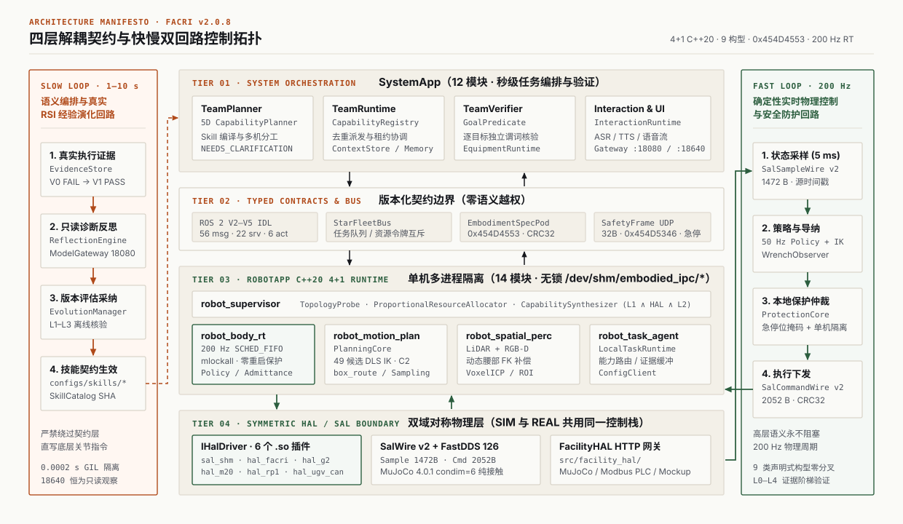

FACRI v2.0.8 · PHYSICAL CONTACT BASELINE
FACRI
具身智能多机协作平台技术手册
从大模型语义规划与受约束离线自我演化，到声明式具身规格驱动的
C++20
多进程硬实时控制与纯接触物理仿真，构建可跨双足人形、复合移动双臂、四足轮腿与特种地勤车队复用的统一具身系统底座。
./facrictl --setup factory start --mode daily --full-process --wait
Smart Factory 场景 4 台 FACRI 物理仿真运行实景（1x · 12.0 s ·
SHA256:623b3ba3f6）PHYSICAL_SIM
C919 机坪 9 机异构保障三维视口（4x 加速）（4x · 21.5 s / 原片 85.9
s · SHA256:ee66c8895d）SCENE_AND_KINEMATIC_T3
实时进程隔离
4+1 多进程架构与独立核组绑核
src/robot_app/supervisor/、src/robot_app/processes/
声明式构型扩展
9 类异构机器人零源码新增复用
configs/robots/*/description.yaml、embodiment_spec.hpp
物理接触可信度
510/510 零吸附纯接触整机通过证据
configs/scenes/manifests/factory.json、docs/development/
宿主机调度基线
0.0002 s Python GIL 间隔冻结基线
docs/development/factory-runtime-baseline.md
范式对比：打破工业具身系统的三重割裂
| 核心维度 | 传统限制与 FACRI 工程解法 |
|---|
| 大模型自主性与物理实时控制 | 传统端到端大模型推理存在数百毫秒至数秒级波动，直接接入电机控制回路会在串口或总线抖动时引发跌倒与碰撞；而完全剥离大模型规划则使系统退化为固定脚本状态机，无法应对工位阻塞或跨机转运异常。FACRI
采用分层解耦设计：上层
SystemApp（Python）运行于语义与任务依赖层，单次故障与重试严格受限于编排队列与
0.0002 s GIL 调度基线；单机底层运行于 C++20
4+1 硬实时进程拓扑，关键身体回路
robot_body_rt（P0_CRITICAL）以
200 Hz（5 ms）周期独立运转于高频实时核，并设置
250 ms SafetyFrame 死人开关与 1 s
心跳超时自动切入
LOCAL_HOLD，实现语义自主性与毫秒级安全的严格边界隔离。 |
|---|
| 多机型扩展与代码库耦合 | 常规机器人软件栈往往为单一构型编写大量分支逻辑，新增双臂移动平台、四足轮腿或专用特种车辆时需重复拷贝控制节点并改动接口字段。FACRI
引入声明式具身规格结构
EmbodimentSpecPod（embodiment_spec.hpp）与固定字节长协议
SalWire v2（sal_wire.hpp）：每种机型通过
description.yaml
描述关节分组、运动学形态、末端执行器、抓握能力位掩码（AffordanceBit）与硬件能力位掩码（HalCapBit），由配置装载器与
CapabilitySynthesizer 按 L1 ∧ HAL ∧ L2
单调收敛规则合成最终有效能力；跨进程与跨硬件数据面统一固化为固定长度结构体，支持双足人形、4WS
复合臂、轮腿机器狗及 C919
牵引车/叉车/传送带车/摆渡车在零核心引擎分支篡改下统一接入。 |
|---|
| 仿真效率与真实移行可信度 | 纯渲染驱动或吸附作弊式仿真虽能跑出高帧率动画，却会掩盖抓握力学失稳、逆解过伸、接口时钟错位与多机通道死锁；反之，以固定实时率门禁强行中断长周期多机物理仿真则会截断真实长尾故障证据。FACRI
坚持纯接触物理仿真与多层级真机同步契约：510/510
全流程纯接触参考运行取代历史抓取作弊逻辑；主工厂与 C919 场景通过
SalWire v2 共享内存槽位、严格跨时钟域 epoch
与时间戳新鲜度校验暴露真实时延问题；工程治理上明确废除
RTF 0.5
自动停机门禁，赋予运行方操作员手动停车唯一主权，同时通过 L0
至 L4
分层证据阶梯防止跨代资格冒用与视觉装饰伪造物理通过。 |
|---|
六大架构支柱
PILLAR 01
SystemApp 整合任务编排器
DynamicCapabilityPlanner、强类型 DAG 运行时
TeamRuntime、严格来源与持股守恒验证器
TeamVerifier，以及面向离线进化实验的
ReflectionEngine 与
EvolutionManager。规划器结合场景知识包、SQLite/FTS5
分域记忆与设备实时状态输出澄清请求、宏技能序列或并行子图；反思与候选演化完全在离线验证沙箱内运行，禁止直接绕过门禁修改在线运行态参数。
PILLAR 02
所有机器人能力边界受控于单一权威数据源
EmbodimentSpecPod。从
configs/robots/*/description.yaml
读取的静态自由度与机构定义（L1）首先与物理/仿真驱动实测的
HalHardwareCaps（HAL）求交集，再由场景清单中的单机策略位（L2）进一步单调收窄。无论运行四台
FACRI 双足人形还是九台异构 C919
地勤装备，上层调度均依据同一能力契约分派任务。
PILLAR 03
单机控制器拆分为 robot_supervisor
守护进程与四个职责正交的 C++20
子进程：robot_body_rt（P0_CRITICAL，200 Hz
核心控制与 50 Hz
局部保护）、robot_spatial_perc（P1_HIGH，10 Hz
定位与视觉感知）、robot_motion_plan（P2_MEDIUM，50
Hz 运动协调与 20 Hz
规划）、robot_task_agent（P3_BACKGROUND，10 Hz
本地任务状态机与证据缓冲）。进程间依靠无锁 ShmSeqSlot 与
SPSC ShmRingQueue 通信，启动期由 TopologyProbe
与 ProportionalResourceAllocator
按机器硬件拓扑自动划分隔离大核、避让高中断核并排除 SMT 兄弟超线程。
PILLAR 04
机器人侧通过统一抽象接口 IHalDriver 动态加载
libsal_shm.so（SIM_SAL）或五类真机硬件插件（REAL_HAL），在
SalWire v2 定长零拷贝内存布局（8192 B
state_cmd.shm 与 128 KiB
lidar.shm）之上运行带外 32 B
SafetyFrame UDP
安全脉冲，实现与仿真器及真实关节控制器的严格隔离；同时，环境工装与地勤设施（压机、检测台、机门、登机桥、行李分拣等）通过独立的
FacilityHAL（工装与地勤设备接入）接入网关并执行
WAL 操作确认。
PILLAR 05
单机内部算法栈以 C++20
原生实现为核心：底盘规划包含融合可逆运动学的
HybridAStar、MPPI 局部避障规划器与冻结合拢控制
PlanarAdjustment；定位模块 VoxelIcpLocalizer
直接消费 6000 点 SalLidarWire 点云；上肢协调规划
UpperBodyPlanner 基于加权 17
自由度阻尼最小二乘（DLS）逆解与 49 候选微扰网格，配合
PolicyRunner
双足策略推理及单边/双边力位柔顺控制，支撑零吸附抓取、插拔与推拉推车动作（细节亦可参见
单机能力模块总览）。
PILLAR 06
平台将工程验证划分为从 L0 到 L4
的逐级证据链条，并以明确冻结清单锁定核心参数（包括 0.0002 s
GIL 基线、废除 RTF 0.5
自动停机门禁以及操作员手动停止唯一主权）。所有研发与部署改动均须保留真实失败计数与归档证据，详细策略基线亦可参阅
运行时基线与冻结治权。
平台四平面总体架构
FACRI
平台遵循自顶向下的「四平面正交分层」架构：交互表现平面（apps/collaboration_platform/
与 apps/model_gateway/）提供 WebGL 场景只读渲染、17+
个任务/感知/演化面板与模型推理配额门控；系统编排与 RSI
平面（src/system_app/）经 StarFleetBus、ROS 2
契约、交互网关与受约束演化反馈流程统筹多机协作；单机多进程与算法平面（src/robot_app/
与 src/embodied_core/）在 4+1
C++20
隔离框架下运行感知、规划、状态估计与局部保护；硬件与仿真执行平面（HAL/SalWire v2/FacilityHAL）则将抽象指令落脚至
MuJoCo 物理世界或实机总线与工业外设。

FACRI 平台总体架构图
双场景沙盘
智能机电工厂场景（configs/scenes/manifests/factory.json）部署
4 台 FACRI
双足人形机器人（robot_r1 至 robot_r4），服务由
16
个工位（A1..D4，涵盖上料机、压装单元、检测台、箱式输送线）与
4
座充电停机桩（CH1..CH4）构成的产线矩阵。系统通过
StarFleetBus（:18641）仲裁
factory.ch_corridor 与 factory.workcell_aisle
共享通道互斥，并结合
FacilityHAL（:18642）完成全流程工件转运。在
real-peer-sync 联调模式下，仅 robot_r1 通过
FastDDS Domain 126
对接外部真机，其余三台保持容器内并发独立运行。
大飞机地面保障过站场景（configs/scenes/manifests/c919.json）统一协调
9
台跨构型异构机器人在双高度工作面（160 m × 120 m 机坪主平面
map_apron 与 z = 3.47 m 客舱通道
map_cabin）联合作业，覆盖
FACRI（R1、R2）、RP1
客舱服务人形、G2 复合双臂、M20
轮腿机器狗及四型专用地面车（AU_02
牵引车、AU_03 叉车、GS_02
行李传送带车、AU_01 摆渡车）。场景对接 8
台地勤设备（航空地面电源插座、前货舱门、传送带、称重台、行李分拣、安检门、餐车升降平台与登机桥），串联
5 条业务线与 G1_STAND_SAFE 至
G4_TURNAROUND_CLOSED 四道强制运行门禁，并通过
--site {sim,lab} 在端口 18640
统一切换全仿或半实物展陈场地。
更多场景编排参数与启停命令对照，请参阅 CLI 与双场景运行指南。
分层证据阶梯与治理红线
L0
静态配置基线与零步校验
运行基线无漂移、YAML/JSON 协议完整性、MuJoCo 零步编译通过
tools/verification/check_factory_runtime_baseline.py、facrictl check
L1
C++20 原生单元测试
embodied_core 与 robot_app 核心算法、协议
CRC 与 SHM 边界断言通过
ctest、src/robot_app/ 原生测试集
L2
有界动力学与单工位独立病例
独立物理工位作业、运动控制误差与零吸附接触约束按真实计数登记
configs/skills/workpiece-processing/contract.yaml
L3
多机并发完整场景与 UI 呈现
多机器人长周期并发完成生产/保障流水线且前端 WebGL
持续渲染不阻塞
apps/collaboration_platform/ 与离线验证流程
L4
物理真机同步与对等发布门禁
Real-Peer Domain 126
锁步联调与真机硬件实测验收，独立授权签发
deployment/prepare_real_peer_release.py
治理红线 · 第一历史旧版
G1
平台或前代实验脚本签发的运行资格与标定参数严禁跨代继承至新
FACRI 或异构机型
治理红线 · 第二高精度 Three.js
r180 场景资产强制标记为
preview_only，新精修渲染外观模型绝对不自动赋予物理碰撞或路径规划资格
治理红线 · 第三必须完整保留
R4 从
V0（RECEIVER_CONDITION_UNHANDLED）失败样本演进至
V1
通过复核的真实对照证据及全部历史实验计数，严禁通过改写基线摘要文件凑取假阳性通过结果
按角色阅读路线与全册六域图谱
DOMAIN 01
涵盖 facrictl
统一入口、容器与本地会话启停、Smart Factory /
C919 Ground Turnaround 双场景命令行控制、17
个前端核心页面以及 Domain 126 真机锁步联调操作。
DOMAIN 02
全景解析四平面正交架构、12 个系统智能体模块与
C++20 进程映射关系、84 份 ROS 2 IDL
契约、StarFleetBus 与 SafetyFrame
线格式及冻结运维基线。
DOMAIN 03
逐一剖析
SystemApp、InteractionGateway、ModelGateway、FacilityHAL、RobotSupervisor、EmbodimentSpecPod、IHalDriver
与单机四大核心运行时。
DOMAIN 04
深入 C++20 原生算法实现，包括
HybridAStar、MPPI、PlanarAdjustment、VoxelIcpLocalizer、17
轴加权 DLS 上肢逆解、PolicyRunner
与单双臂力位柔顺控制。
DOMAIN 05
完整记录 L0 至 L4
证据标准、510/510 零吸附纯接触实验对照、R4
失败排查演化序列与高帧率实时率历史调优数据。
DOMAIN 06
汇集仓库研发规则、模块所有权分工、factory-rd-pitfalls
高频踩坑记录、离线标准校验脚本与冻结特性清单。